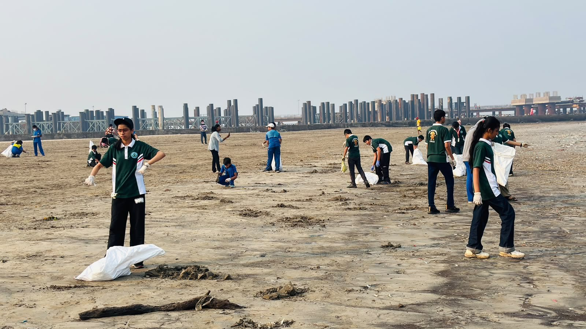
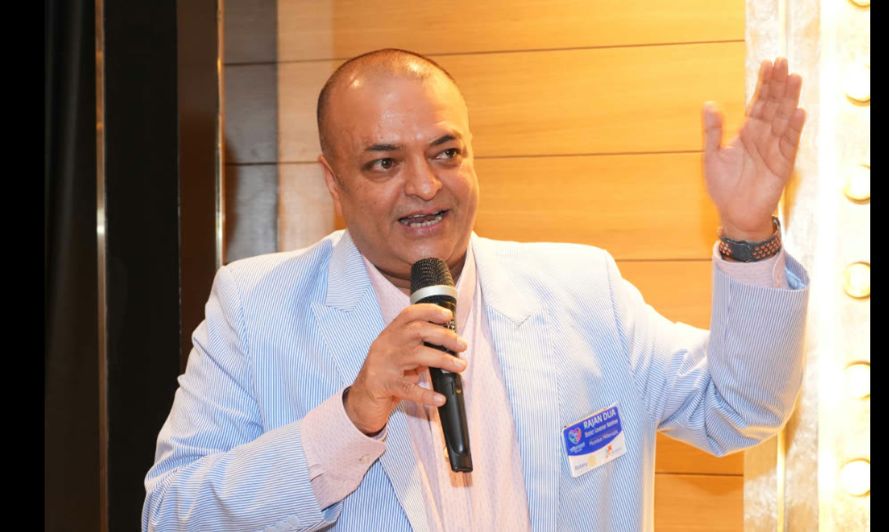

Club Projects
- 18Projects
- 59,895Beneficiaries
- ₹119.7 LAmount spent
- 5,735Man hours

25Oct 2026
RC Bombay Airport
Beach clean-up at Juhu
Volunteers cleared plastic and waste from two kilometres of shoreline.

18Oct 2026
RC Bombay Bandra
Dignity packs for girls
Menstrual hygiene kits and a health talk for girls in municipal schools.

11Oct 2026
RC Upper Kandivali
Vision centre opening
A permanent eye clinic with screening for the neighbourhood.

4Oct 2026
RC Bombay
English speaking course
A twelve-week spoken English course for schoolgirls.

27Sep 2026
RC Bombay Pier
Medical equipment for the civic hospital
Dialysis and monitoring equipment funded through a global grant.

20Sep 2026
RC Vasai
Food kits for families
Monthly ration kits for families of daily-wage workers.

13Sep 2026
RC SkyCity Borivali
Tree plantation drive
Two thousand saplings planted with residents and students.

6Sep 2026
RC Wada
Mid-day meals for schools
Nutritious meals for children in four village schools.

30Aug 2026
RC Boisar-Tarapur
Goodwill school opening
A new school building with classrooms, toilets and a library.

23Aug 2026
RC Virar
Flood relief for Dahanu
Supplies and temporary shelter for families after the floods.

16Aug 2026
RC Umroli
Notebooks for students
Notebooks and school kits for the new academic year.

9Aug 2026
RC Bombay
Food for Warkari pilgrims
Meals and water for pilgrims on the way to Pandharpur.

2Aug 2026
RC Bombay Bandra
New member orientation
A half-day welcome and training for members who joined this year.

26Jul 2026
RC Bombay Airport
Club leadership training
Training for club presidents, secretaries and directors.
19Jul 2026
RC Vasai
Fellowship evening
An evening of fellowship with families of members.
12Jul 2026
RC Virar
Membership drive
Open house to introduce Rotary to professionals in the area.
5Jul 2026
RC Bombay Pier
Vocational excellence awards
Awards for nurses, teachers and workers who serve with distinction.
Public Image 1Jul 2026
RC SkyCity Borivali
Rotary week on social media
A week of stories about club projects across the district.


No project matches your search.